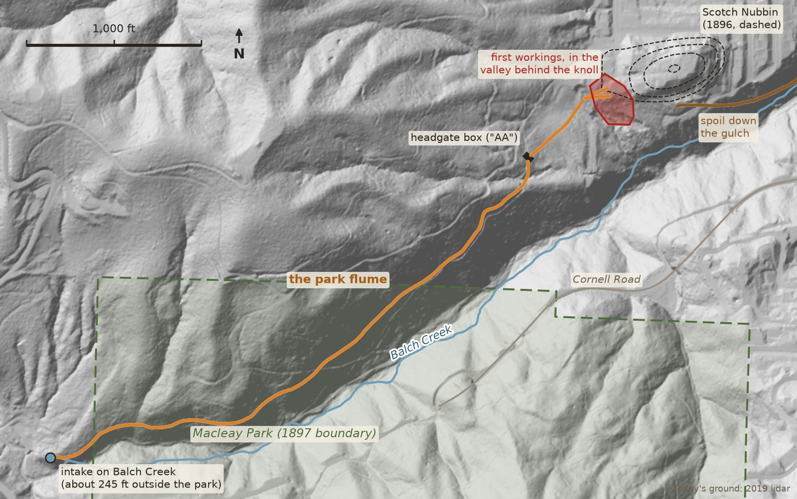
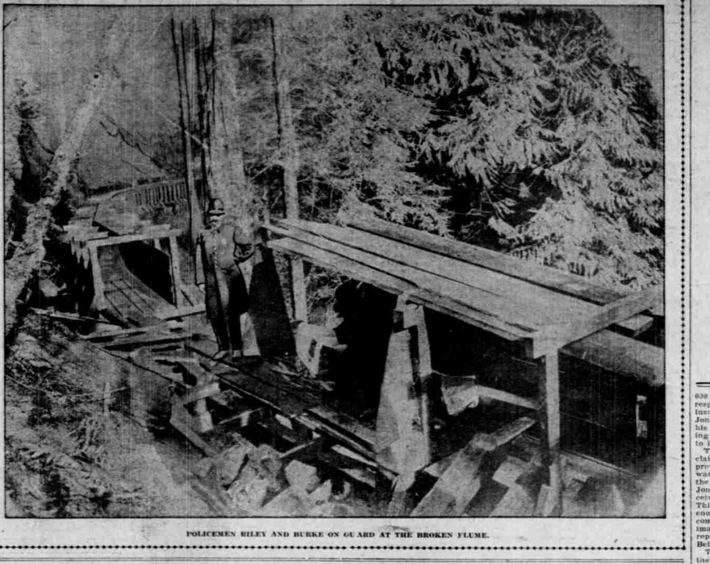
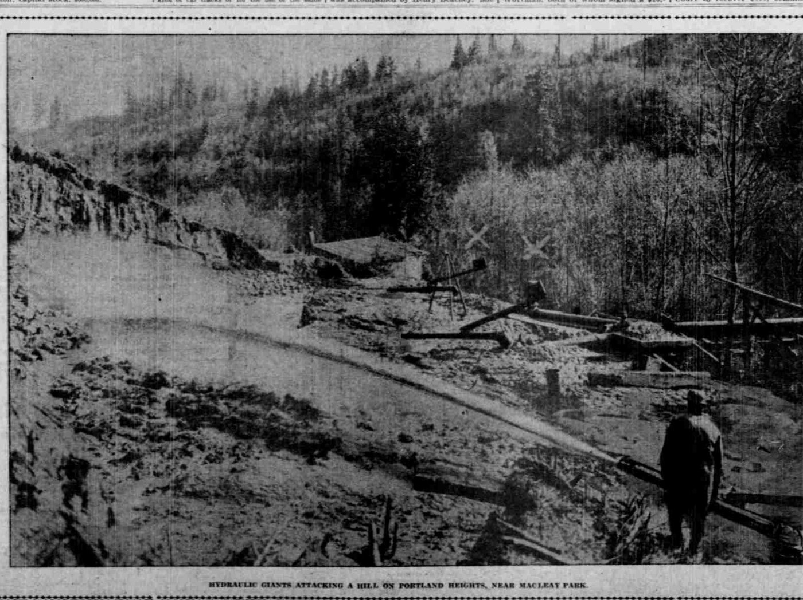
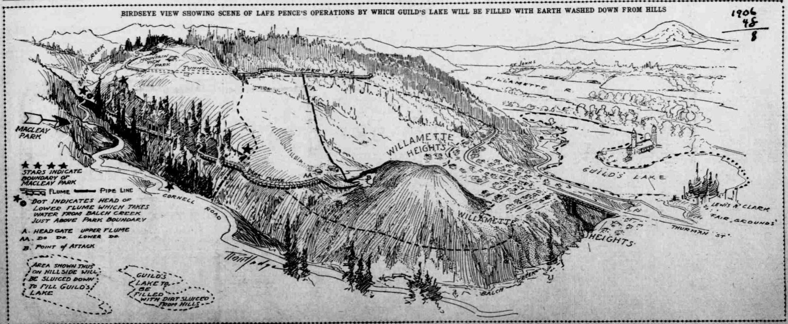
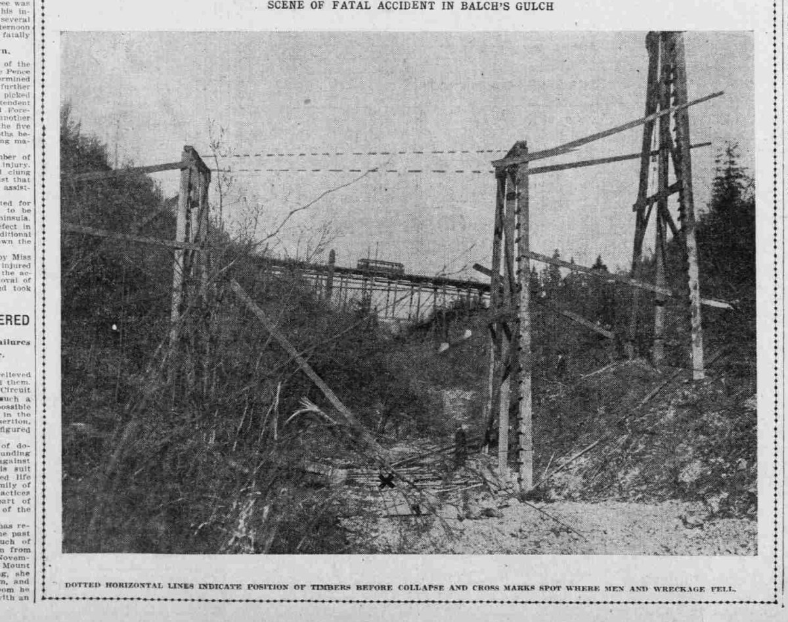
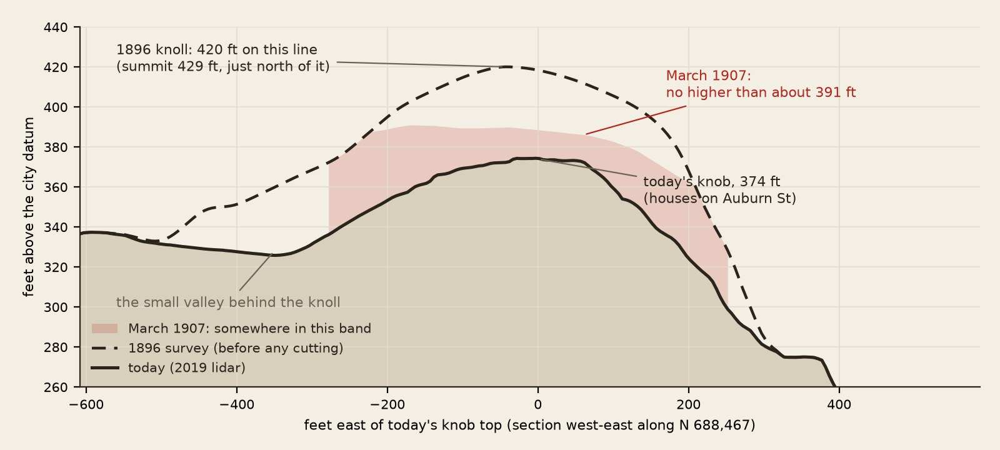
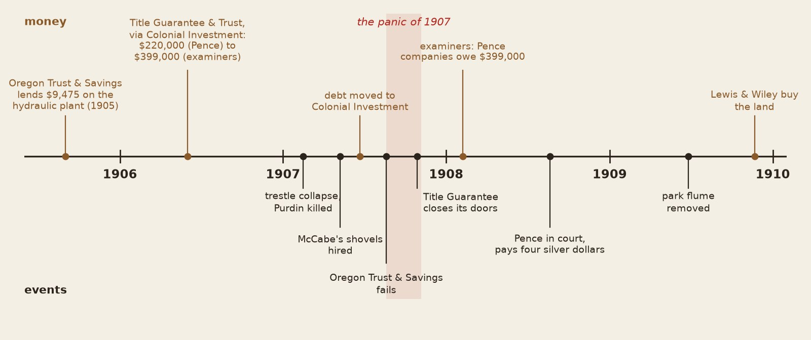
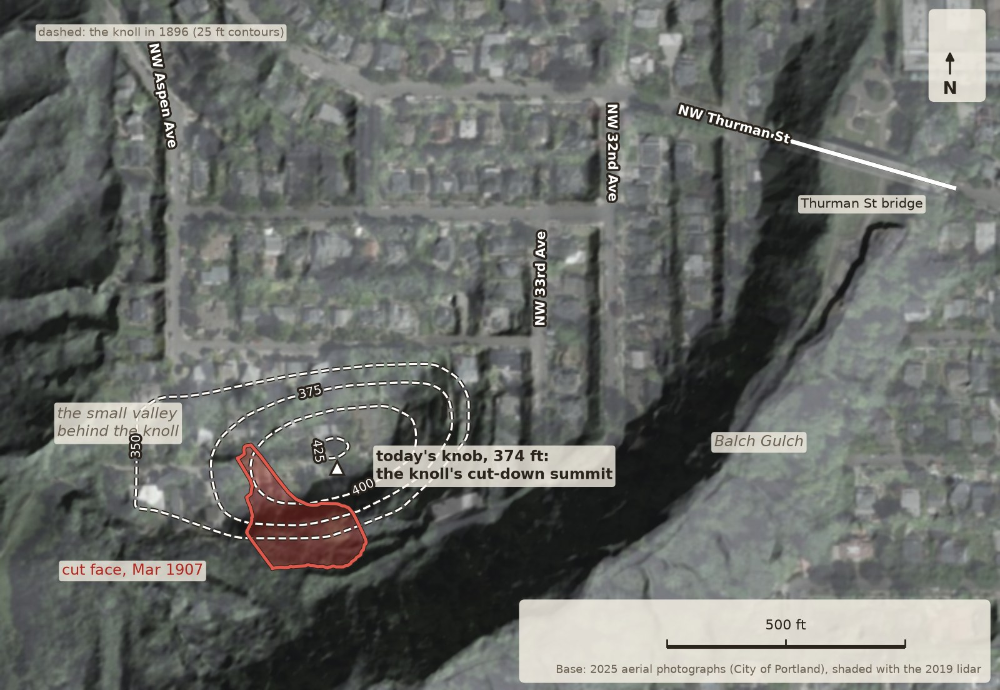

3. The flume war
December 1905 - March 1906
Pence needed a way through Macleay Park. Balch Creek ran down its canyon, and the hill he meant to wash away stood just beyond it, behind Willamette Heights. In December 1905 he said he would ask the Mayor and the Park Board for leave to run a flume through the park for three years, at a rental (Oregonian, 18 Dec 1905). The Oregonian warned that if he laid violent hands on the park he would have "the fight of his life" (Oregonian, 19 Dec 1905). The new mayor, Harry Lane, walked the ground with him and told him to get the board's consent and give bond. Pence never applied (Oregonian, 1 Mar 1906).
He built it anyway. Over the winter his crews put up more than 6,000 feet of plank box flume on trestles along the north wall of the canyon (Figure 3.1), known, he said later, only to "a trusted few". His reasoning was that a working flume would make a better argument than a request, which would only be turned down (Oregonian, 27 Feb 1906). On Saturday 24 February Lane found it carrying water across city property. The next afternoon he came back with Captain Bruin and a squad of police carrying sledgehammers, smashed a stretch of it at the upper end of the park, and left officers to guard the wreck overnight (Figure 3.2) (Oregonian, 26 Feb 1906). The upper end was where the flume left its intake on Balch Creek and entered the park, and later accounts say a survey found the smashed stretch lay just outside the park line; no report of that survey from 1906 has turned up. Pence answered that his company could condemn what it needed, and that four giants were at work on Balch Creek water (Oregonian, 26 Feb 1906).




Then it turned into a truce. On Monday Lane, the city attorney, the city engineer and a park commissioner waded the full length of the flume with Pence in pelting rain, Pence in rubber boots and a cowboy hat, and came out to see "the big hydraulic giant at work on the hillside back of Willamette Heights" (Figure 3.3) (Oregonian, 27 Feb 1906). On Tuesday the mayor told the Park Board that Portland always drove its promoters off to Seattle, and the board voted two to one to let the flume cross the park for a year from 15 May: water only in the rainy months, a bond against damage, removal when asked, and no claim to the creek (Journal, 27 Feb 1906). Within 35 minutes water was running through the mended flume again, and the giants worked day and night (Oregonian, 1 Mar 1906).


The paper now explained the works with a bird's-eye drawing (Figure 3.4). An upper flume came round the head of the basin through a tunnel and dropped its water 324 feet in a pipe to one high-pressure giant, which did the cutting; the park flume fed two more that swept the spoil down Balch Gulch toward the lake. About 60 feet had been cut into the hill so far, and the plan was to turn it into three terraces for houses (Oregonian, 1 Mar 1906). The giants stood in the small valley behind the knoll and worked at its back face, where the park flume ended at a headgate and the upper flume's pipe came down to them (Figure 3.1). Pence invited the public out to watch: take the W car across the Thurman Street bridge to Rugby Street and walk up the brush road (Journal, 1 Mar 1906). On 2 March the board approved the written contract, a cash bond and a railed footwalk along the top of the flume included (Journal, 2 Mar 1906). "When it comes to handling Park Boards," the Oregonian remarked, "Lafe Pence is right there" (Oregonian, 1 Mar 1906).


5. Washing down the Scotch Nubbin
Winter 1906-07

The Scotch Nubbin was a knoll on the Willamette Heights side of Balch Gulch, about 430 feet high. What is left of it is the house-topped knob that stands at 374 feet today: the knoll's summit, cut down by some 55 feet. It is the great dome in the 1906 drawing (Figure 3.4), and Pence's giants had been at its back face since early 1906; in November 1906 he went at it in earnest. On the 27th a 400-pound black-powder blast, set in two tunnels, rattled windows all over Willamette Heights. The residents protested, and the next day City Engineer Taylor revoked Pence's blasting permit (Journal, 28 Nov 1906). Pence said he would keep washing the hill down anyway; it would only cost more (Oregonian, 28 Nov 1906; Journal, 29 Nov 1906). Across the river, the St. Johns Review joked that its babies had slept through the blast (St. Johns Review, 30 Nov 1906).
Through the winter three hydraulic giants washed away the upper part of the knoll. The spoil ran off in box flumes on trestles down the north wall of the gulch, across it near Savier and 31st, past Pence's office in the old Emergency Hospital, through the Klondike building and out over the Trail and the Bridge of Nations: nearly a mile, to a diked fill behind the Government Building (Figure 5.2) (Oregonian, 7 Mar 1907). The Journal counted some 35 miles of flume on three levels across the whole works (Journal, 8 Mar 1907).

The work was dangerous. On 15 February 1907 a new section of trestle, about 40 feet above the gulch near Savier Street, gave way under the men building it. H. B. Purdin, 42, lately of Hillsboro, died that afternoon; Elmer Thompson and Thomas Jewell were badly hurt (Figure 5.3) (Journal, 15 Feb 1907; Oregonian, 16 Feb 1907). Two weeks later a rock sluiced down by Pence's crew struck a policeman in Macleay Park (Journal, 3 Mar 1907).


On 11 March the Oregonian printed a picture of the whole system (Figure 5.1). It credited the winter with about 200,000 cubic yards washed into the lake and a 22-acre tract filling behind the Government Building, and Pence promised to finish the Nubbin by dry grading by August, then start on the east side of the gulch (Oregonian, 11 Mar 1907).
Matched to a model of the ground before the cuts, seen from the same spot, the hill in the picture fills the same outline as the knoll, and the cut face is eaten into its flank, while the flumes run where the gulch wall lets them (Figure 5.4). The picture's crest already sits some 30 to 40 feet below the model's summit: a winter of washing down the top. Much of what the model shows in blue was still standing in March 1907.

Not everyone saw progress. Writing for the Willamette Heights residents, Jerry Bronaugh said the company had "scarcely scratched" the Nubbin (Oregonian, 15 Mar 1907). In May, Russell & Blyth, who by then owned the land around the knoll, hired George McCabe's steam shovels to take it down; by late June the shovels were on the hill and the hydraulic work had stopped (Oregonian, 9 May 1907; Oregonian, 23 Jun 1907).
6. The shovels, and the money runs out
1907-1909
The steam shovels finished what the giants had started. McCabe's contract was to move 275,000 cubic yards, and the spoil was to level Russell & Blyth's own lots within 600 or 700 feet of the hill, not to go to the lake (Oregonian, 9 May 1907). The hydraulic work had been given up because the ground was too hard to wash (Oregonian, 23 Jun 1907). By then the giants had already taken some 40 feet off the top: the hill's outline in the March picture sits no higher than about 391 feet, against roughly 429 on the 1896 survey. The shovels took the summit down to today's 374 feet and cut back its west side (Figure 6.1).


Pence's own trouble was money. In May the Park Board asked him to show why his Macleay Park flume permit should not be revoked, citing damage and dying ferns (Oregonian, 4 May 1907); he asked to keep the flumes another year, admitting a dam had broken in the winter (Oregonian, 9 Jun 1907). That summer he still talked of buying the whole fairground for $300,000 and of filling 22 acres round the Government Building the next winter (Oregonian, 4 Aug 1907), and then turned to selling firewood to break the wood trust (Journal, 20 Aug 1907), a deal the unions said he never delivered (Labor Press, 23 Sep 1907).
Then the banks went (Figure 6.2). Oregon Trust & Savings failed in August 1907, the first Portland failure of that year's panic; its receiver found Pence owing $8,716 on 1905 loans secured by his Willamette Heights hydraulic plant (Oregonian, 18 Sep 1907). Among the depositors was Purdin's widow, who lost nearly $1,000 (Hillsboro Argus, 29 Aug 1907). On 28 October Title Guarantee & Trust, Pence's main lender, closed its doors. The Oregonian put the failure of his fairground schemes first among the causes: $225,000 lent to him and $175,000 more sunk in land (Oregonian, 7 Nov 1907). Pence answered that his company owed the bank nothing, its debt being to the bank's subsidiary, the Colonial Investment Co. (Oregonian, 8 Nov 1907). The paper asked how he had got "a credit of a quarter of a million" in the first place (Oregonian, 26 Nov 1907), and the bonding company's controller put it plainly: the people's savings "were flushed into the side of a hill to fill up fair grounds" (Oregonian, 9 Dec 1907).


The examiners' report in February 1908 found the bank had never been solvent and that "the Lafe Pence companies owe the bank $399,000" (Oregonian, 8 Feb 1908); Pence wrote back that his loan was $220,000 (Oregonian, 9 Feb 1908). By August he was in court over unpaid judgments, accusing the bank's officers of plotting to ruin him, and handed over four silver dollars (Oregonian, 21 Aug 1908). The city could not make him take the park flume out before June 1909 (Journal, 8 Mar 1909); by the end of that month it was gone (Journal, 29 Jun 1909). In November, reporting Lewis & Wiley's purchase of the land, the Oregonian noted that Pence had tried "this identical project" and failed (Oregonian, 21 Nov 1909).
7. What's left
1909 to today
In November 1909 Lewis & Wiley, the Seattle regrade contractors, bought 90 acres of Guild's Lake land to fill, and the Oregonian noted that Pence had attempted "this identical project" and failed after building his flumes and starting to sluice (Oregonian, 21 Nov 1909). They pumped their water instead of waiting for winter rain, and over five years washed Goldsmith Hill and the slopes behind it into the lake as Westover Terraces. When W. H. Lewis declared the work finished in 1914, he said every trace of construction had been cleared away, "even including the old Lafe Pence structures" (Oregonian, 13 Sep 1914). That is the next story.
The bank's receiver wrote Pence's accounts off as worthless in 1912 (Oregonian, 27 Jan 1912). By then he was a patent lawyer in Washington, D.C., turning up as a contested delegate to that year's Democratic convention (Journal, 6 Jun 1912); a year later his wife sued him for separation (Oregonian, 17 Jun 1913). He died in Washington in October 1923 and was buried in Columbus, Indiana (Biographical Directory of the U.S. Congress).
On the ground, the Scotch Nubbin is still there if you know where to look (Figure 7.1). The house-topped knob at 374 feet, west of NW 32nd and 33rd Avenues, is its summit, cut down by some 55 feet; the low ground just west of it is the small valley that lay behind the knoll on the 1896 survey. The steep face above Balch Gulch is where the giants and then the shovels bit into it, and the gulch floor by the Thurman Street bridge, which Pence's trestles crossed, now lies under as much as 40 feet of later fill.

